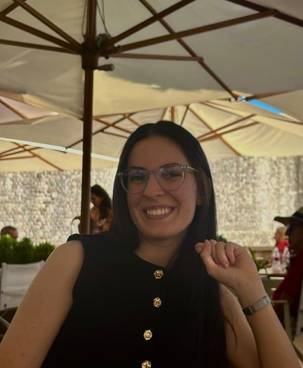

O meni
Studentica sam na TVZ-u smjer graditeljstvo s interesom za projektiranje, tehničko crtanje i digitalne alate u građevinarstvu.
Volim učiti, razvijati nova znanja i upoznavati nove programe. Trenutno vrlo dobro poznajem AutoCAD, dok u Revitu imam osnovno znanje koje želim dalje proširivati i razvijati. Svoje znanje razvijam kroz praktične projekte i rad u programima, pri čemu mi je važno razumjeti kako se ono može primijeniti u stvarnom svijetu i pronaći praktična rješenja za različite zadatke.
U slobodno vrijeme volim isprobavati nove ideje, raditi na vlastitim projektima i istraživati nove programe i načine rada. Na taj način nastojim proširiti svoje znanje, steći nova iskustva i kontinuirano se razvijati. :)

Obrazovanje ukratko
2025 – danas
prijediplomski stručni smjer graditeljstva
Tehničko veleučilište u Zagrebu
2023 – 2025
opće srednjoškolsko obrazovanje - državna matura
Dubrovačka privatna gimnazija
2017 – 2023
srednjoškolsko obrazovanje - Mittlere Reife
Josef-Effner-Gymnasium, Njemačka
(matematičko-prirodoslovni smjer)
Vještine
- organiziranost i smirenost
- samostalan rad
- timski rad i komunikacijske vještine
- odgovornost i pouzdanost
- Microsoft Office, VS Code, AutoCAD i Revit
Ako želite saznati više o mom obrazovanju, vještinama i dosadašnjem iskustvu, cijeli CV možete preuzeti ovdje! ↓